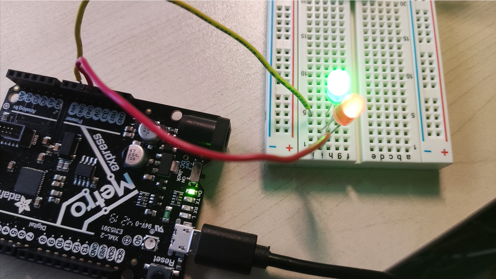
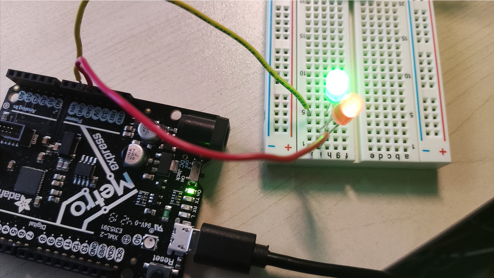

Week 3: Electronics & Tools Home Page
The requirements for this week's assginment was to make and document either a kinetic sculpture or a quick prototype of a possible final project.
At the beginning, my idea was to create a led-fan that creates some patterns when the fan rotates. However, I found out that I didn't have the materials to do that, and it took few days for cardboards and hot glues to arrive. So I only had few hours of time to make a simpler version.

Here is a diagram to illustrate the circuit.
The requirements for this week's assginment was to make and document either a kinetic sculpture or a quick prototype of a possible final project.
At the beginning, my idea was to create a led-fan that creates some patterns when the fan rotates. However, I found out that I didn't have the materials to do that, and it took few days for cardboards and hot glues to arrive. So I only had few hours of time to make a simpler version.
Here is a diagram to illustrate the circuit.